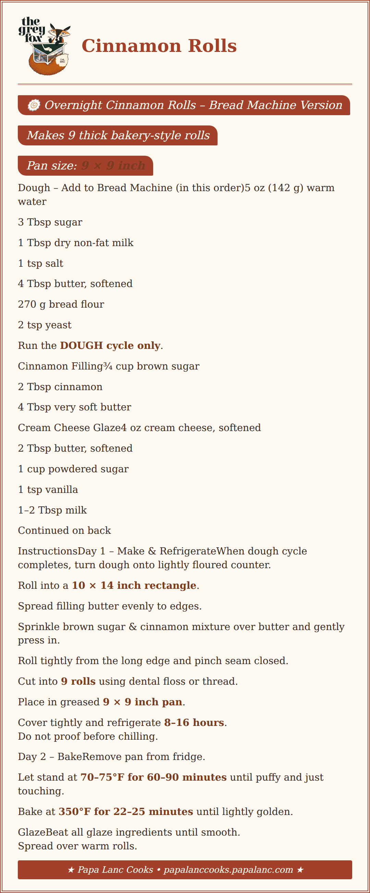

WELCOME
Dough – Add to Bread Machine (in this order)5 oz (142 g) warm water
3 Tbsp sugar
1 Tbsp dry non-fat milk
1 tsp salt
4 Tbsp butter, softened
270 g bread flour
2 tsp yeast
Run the DOUGH cycle only.
Cinnamon Filling¾ cup brown sugar
2 Tbsp cinnamon
4 Tbsp very soft butter
Cream Cheese Glaze4 oz cream cheese, softened
2 Tbsp butter, softened
1 cup powdered sugar
1 tsp vanilla
1–2 Tbsp milk
Continued on back
InstructionsDay 1 – Make & RefrigerateWhen dough cycle completes, turn dough onto lightly floured counter.
Roll into a 10 × 14 inch rectangle.
Spread filling butter evenly to edges.
Sprinkle brown sugar & cinnamon mixture over butter and gently press in.
Roll tightly from the long edge and pinch seam closed.
Cut into 9 rolls using dental floss or thread.
Place in greased 9 × 9 inch pan.
Cover tightly and refrigerate 8–16 hours.
Do not proof before chilling.
Day 2 – BakeRemove pan from fridge.
Let stand at 70–75°F for 60–90 minutes until puffy and just touching.
Bake at 350°F for 22–25 minutes until lightly golden.
GlazeBeat all glaze ingredients until smooth.
Spread over warm rolls.

WELCOME
Converted from the original file for viewing — open/download the original to edit it.